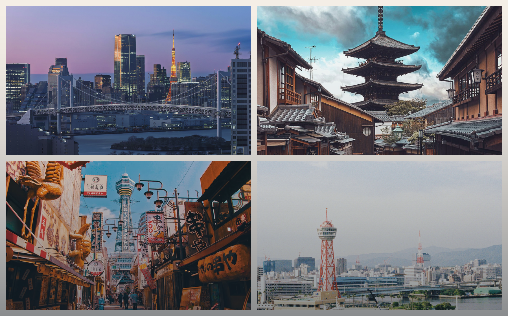
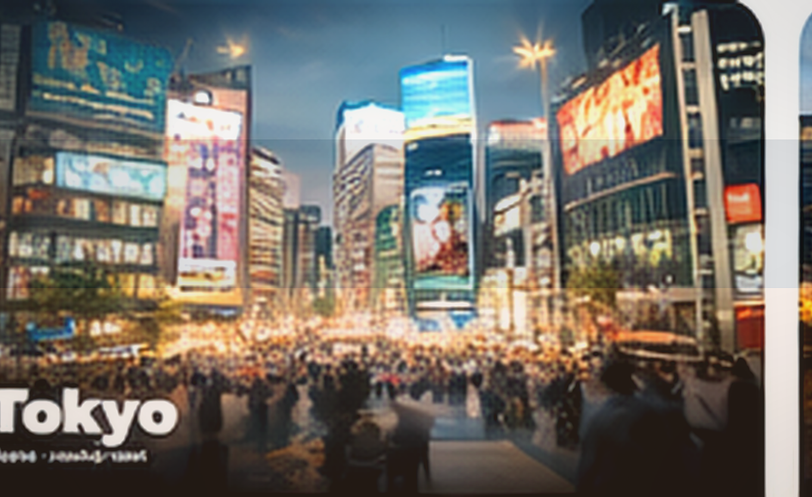
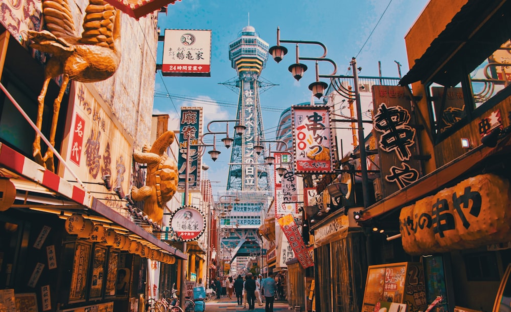

Start from a travel mood
지금 끌리는 방식으로 여행을 시작하세요
도시 이름부터 고르지 않아도 됩니다. 분위기, 페이스, 목적부터 잡으면 플래너가 훨씬 자연스럽게 출발해요.
일본과 한국 도시 가이드, 예시 일정, AI 플래너를 한곳에서.

도시 이름부터 고르지 않아도 됩니다. 분위기, 페이스, 목적부터 잡으면 플래너가 훨씬 자연스럽게 출발해요.
완전히 처음이어도, 하나를 눌러서 바로 값이 채워진 상태로 시작할 수 있게 만들었습니다.
대표 지역은 놓치지 않으면서도, 하루 하나씩 덜 붐비는 포인트를 섞은 균형형 루트.
동네 vibe 차이를 느끼면서도 이동이 과하지 않게, 낮과 밤의 리듬을 나눠서 짠 서울형 루트.
풍경과 휴식을 우선에 두고, 체력 소모를 줄이면서도 제주다운 장면은 놓치지 않는 타입.
도시, 동행, 페이스를 하나씩 고르면 플래너 값이 미리 채워집니다. 처음 쓰는 사람도 고민보다 선택부터 시작하게 만들었어요.
대표 도시 하나만 고르면 추천 길이까지 먼저 잡아줍니다.
여행 스타일을 먼저 고르면 notes도 자연스럽게 보정됩니다.
동행 타입을 고르면 결과 문장도 훨씬 자연스러워집니다.
처음 써보더라도 바로 감이 오도록, 예시 일정 하나를 먼저 보여드릴게요.
대표 지역과 조용한 동네를 균형 있게 엮어, 너무 빡빡하지 않으면서도 도쿄다운 흐름을 느낄 수 있는 일정이에요.
Each day keeps the route compact, readable, and easy to follow on mobile.
작지만 실제로 여행 퀄리티를 바꾸는 팁들입니다.
예약, 준비물, 출발 전 확인용으로 바로 쓸 수 있게 정리했어요.
많이 찾는 도시부터 가볍게 읽어보고, 바로 일정으로 이어갈 수 있어요.




읽고 끝나는 가이드가 아니라, 바로 일정으로 연결됩니다.
이동 중에도 쉽게 보고, 저장하고, 다시 열 수 있어요.
일정만이 아니라 여행 준비에 필요한 요소까지 함께 정리합니다.
플래너가 어떤 결과를 만드는지, 실제 예시로 먼저 확인해보세요.